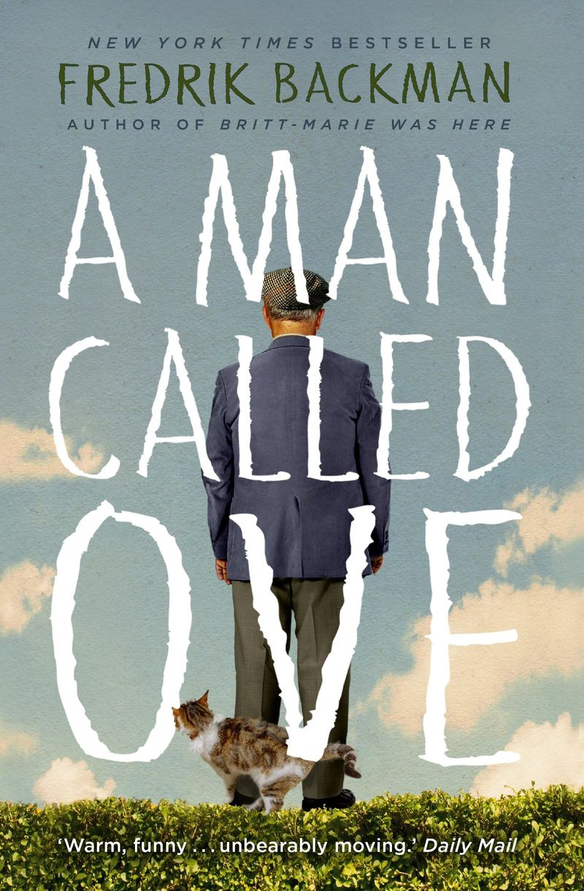

“เบื้องหลังคนหัวแข็ง
อาจซ่อนหัวใจที่เคยแตกสลาย...”
“A Man Called Ove” เล่าเรื่องของชายชราคนหนึ่งที่ดูดื้อรั้น เคร่งเครียด และเย็นชา
แต่ภายใต้ท่าทีเหล่านั้น
คือหัวใจที่เต็มไปด้วยบาดแผล ความรักที่ไม่เคยจาง และความหวังที่ยังแอบหลงเหลืออยู่
นี่ไม่ใช่แค่เรื่องของชายแก่ขี้โมโหคนหนึ่ง — แต่คือเรื่องของ การเยียวยาหัวใจ ผ่าน มิตรภาพ
และความสัมพันธ์ธรรมดาที่
เข้ามาเปลี่ยนชีวิตเขาทีละน้อย ช่วยให้เขาเรียนรู้ ชีวิต, ความเปลี่ยนแปลง, และการรับมือกับ การสูญเสีย
ถ้าคุณเคยรู้สึกว่าตัวเองถูกเข้าใจผิด หรือรู้สึกเหงาในโลกที่วุ่นวาย
หนังสือเล่มนี้คือ หนังสือเยียวยาใจ ที่อาจพูดแทนใจคุณได้อย่างเงียบงันที่สุด
รักเล็ก ๆ ที่เยียวยาใจ
ถ้าคุณกำลังมองหา หนังสือเยียวยาใจ ที่อ่านแล้วอบอุ่นหัวใจ และช่วยให้มองโลกด้วยมุมใหม่
Man Called Ove
คือหนึ่งในเล่มที่ไม่ควรพลาด เรื่องราวของชายชราจอมบ่นผู้ใช้ชีวิตอย่างโดดเดี่ยว แต่กลับถูกเปลี่ยนแปลงด้วยพลังของ
มิตรภาพ และความสัมพันธ์ที่ไม่คาดคิดจากเพื่อนบ้านใหม่
นิยายเรื่องนี้ถ่ายทอดความหมายของ ชีวิต ได้อย่างลึกซึ้ง — จากความเรียบง่ายของวันธรรมดา
ไปจนถึงการเรียนรู้ที่จะเปิดใจอีกครั้ง หลังผ่าน ความสูญเสีย อันเจ็บปวด ผู้เขียน Fredrik Backman ถ่ายทอดตัวละคร
“โอเว่” ให้เรารู้สึกทั้งขบขัน ซาบซึ้ง และเข้าใจว่าทุกคนต่างมีเรื่องราวของตัวเองซ่อนอยู่
สิ่งที่ทำให้ A Man Called Ove เป็น หนังสือเยียวยาใจอบอุ่นหัวใจ
คือการผสมผสานระหว่างอารมณ์ขันอันอบอุ่นกับความเศร้าที่งดงาม หนังสือเล่มนี้จะพาคุณสำรวจความหมายของ
มิตรภาพ,
ความรัก, และ ความเปลี่ยนแปลง ที่เกิดขึ้นเมื่อเรายอมเปิดประตูหัวใจให้กับคนอื่น
ไม่ว่าคุณจะเคยผ่านช่วงเวลาโดดเดี่ยว สูญเสียคนสำคัญ หรือกำลังมองหากำลังใจในการเริ่มต้นใหม่ A Man Called Ove
จะทำให้คุณเชื่ออีกครั้งว่า “แม้ชีวิตจะไม่สมบูรณ์แบบ แต่ความเมตตาเล็กๆ จากผู้อื่น
ก็เพียงพอที่จะเยียวยาหัวใจเราได้"
หนังสือเล่มนี้จะช่วยให้คุณ…
1. เข้าใจและเห็นใจคนที่แตกต่างจากตัวเองมากขึ้น ผ่านเรื่องราวของ มิตรภาพ
และการใช้ชีวิตของตัวละคร
2. ตระหนักว่า “ความใส่ใจเล็ก ๆ น้อย ๆ” ในชีวิตประจำวัน สามารถสร้าง
ความเปลี่ยนแปลงครั้งใหญ่
และเติมเต็มความหมายของ ชีวิต
3. ได้แรงบันดาลใจที่จะไม่ยอมแพ้ แม้ต้องเผชิญ ความสูญเสีย หรือเรื่องราวยาก ๆ ในชีวิต
4. รู้สึกอบอุ่นหัวใจ และเห็นความหมายของ ครอบครัว เพื่อน และความรัก ในมุมที่ลึกซึ้ง
พูดง่าย ๆ คือ ถ้าคุณกำลังมองหา หนังสือเยียวยาใจ ที่ทำให้หัวใจนุ่มขึ้น และมองโลกในมุมใหม่ ๆ
เล่มนี้เหมาะสำหรับคุณแน่นอน